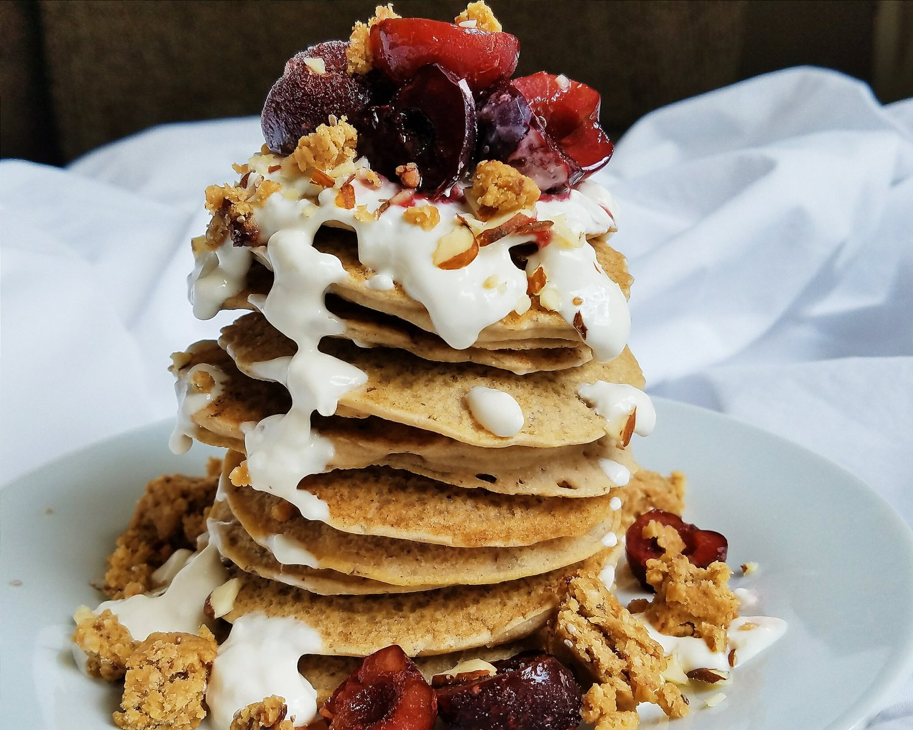

Cherry Cheesecake Pancakes (vegan, gluten free)


These healthy cherry cheesecake pancakes will have you questioning whether you're dreaming or in reality. Definitely in reality... These pancakes are soft and sweet with a creamy icing that make them almost too delicious to be true. Not only are they satisfyingly sweet, but these pancakes are completely vegan, gluten free, and sugar free as well!
Look at this stack!! I think if I stacked them a single pancake higher, they would have fallen over. I had a hard enough time as it was with this stack - had a few "OH DEAR NO DON'T FALL" saves in the process as it well! I'm literally pancakin til I can't pancake no more. They are springy, soft, and sooo great! I love that the actual pancake part is lightly sweet, but overall wholesome. Not too overwhelming in sweetness, that way the sweet topping can really shine and do its part! I was worried this icing would end up still just tasting like plain cream cheese. But I was wrong! Just a few additions and the flavor and texture ended up addictively delicious. I want to add it on everything! Like oatmeal, toast, more pancakes.... And I probably will!
And you can't forget the cherries! I like to use frozen cherries and halfway melt them to create a sauce/syrup on top, but this time I just left them as they are. Both options absolutely fantastic. I also added a bit of an oat bar and some almonds, mostly for that touch of crunch that I love dearly. You know what I mean??
My neck and back have been slowly rehabilitating. I was feeling like it's taking such a long time to heal considering I've already been to the chiropractor for 4 treatments. But I finally saw my xrays on Friday... and wow. I started to panic and almost have an anxiety attack just seeing how bad the structure is. I felt like I was looking at someone else's neck - like surely that can't be mine. But...it makes a lot of sense now why I've been feeling so much pain and other weird body effects like nausea. I feel a lot more justified in having to take off work. My chiropractor said it takes 90 days to fully recover from whiplash, isn't that crazy!?The car.....still no car. Kinda sad, but I mentally prepared myself for this. They estimate I should have it by the end of this week, making it over 2 weeks without a car. It's not as awful as I thought it'd be...just inconvenient because I can't really do errands or go to the gym, but maybe it's best this way since I'm forced to take it easy. I've still been cycling on my trainer, just not as intensely. I think the hardest part of having no car is that I haven't had Pesto to love :( he's at the dog sitter until I have my car since I have no way to drop him off and pick him up while I'm at work. It's better this way for him...because he can be happy and busy. I just miss my best friend. :( Can pancakes be my best friend? Actually, I think they can be.
Try these healthy and absolutely delicious cherry cheesecake pancakes. They are completely vegan, gluten free, and sugar free as well!
Cherry Cheesecake Pancakes
Serves: 1
Batter
-
1/2 cup buckwheat flour
-
1 TBSP ground flax seeds
-
1/2 tsp baking powder
-
1/4 tsp baking soda
-
1 stevia packet
-
1/2 cup unsweetened almond milk
-
1/2 tsp vanilla extract
Cherry Cheesecake
-
2 TBSP vegan cream cheese (I use Tofutti)
-
1/4 tsp vanilla extract
-
2-3 stevia drops
-
splash of almond milk
-
5-6 cherries
Mix the dry ingredients for the batter. Then slowly mix in the wet ingredients until even. Spray a large pan with nonstick spray. Cook each pancake on low/medium heat. Flip when they lightly bubble. Cook another 2-3 minutes, then remove from pan.
For the topping, whisk the cream cheese with vanilla extract, stevia, and enough almond milk to be creamy. Once evenly mixed, pour on top of the pancakes. Slice the cherries and add on top, too. Enjoy!